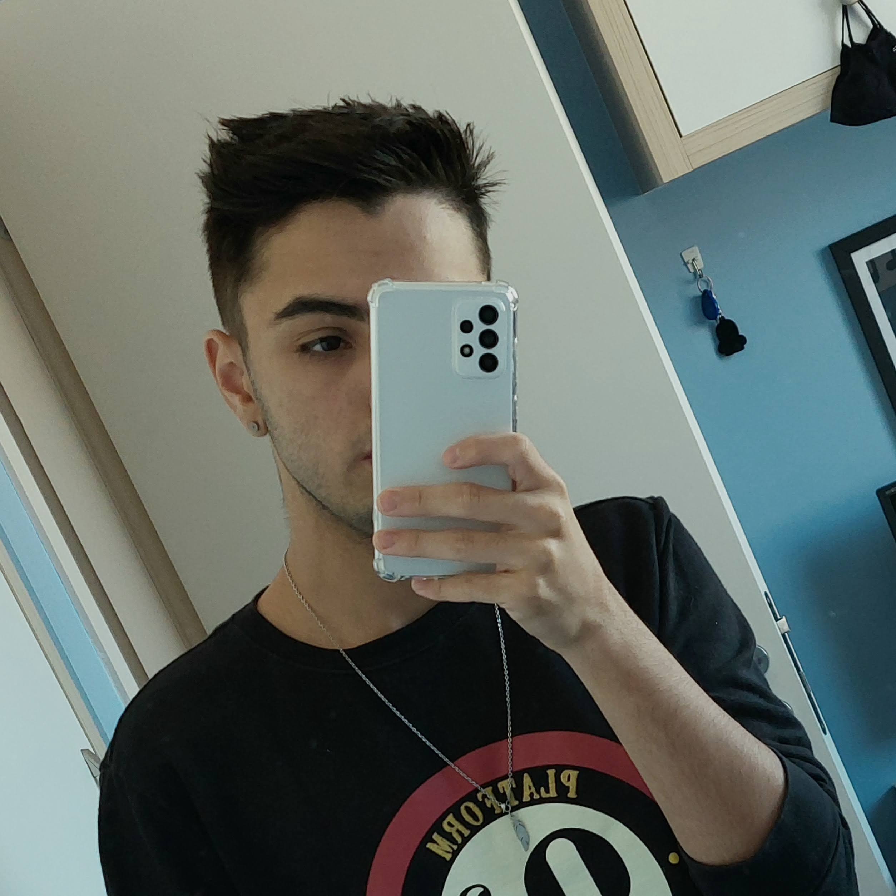

Portfolio Web
Portfólio de um estudante de computação
Quem sou eu
Eu, Rafael, sempre tive aptidão para a área da computação, aos 13 anos ganhei minha primeira placa de prototipagem (Arduino), passando a me interessar ainda mais pela informática, o que me abriu as portas para o mundo da TI. Hoje, aos 18 anos, sou técnico em informática pela TECPUC e graduando em Ciência da Computação pela PUCPR.
Formação
Projetos
Dog Task
Jogo - Exp. CriativaBikini Bottom party
App - Exp. CriativaFole Follow
Aplicativo Web - Exp. CriativaJokenpô Python
Trabalho - R. AlgoritmoMáquina de Bebidas
Trabalho - R. AlgoritmoSmart Sinal
TDE Smart City - Sist. Cyberfísicos
Sinal Inteligente que por meio de um sensor de ultra-som reconhece se um pedestre deseja atravessar a rua, além de um buzer para sinalização para pessoas cegas e/ou baixa visão trazendo mais segurança e praticidade ao trânsito. O projeto utiliza um Arduino 1 sensor de ultra-som, buzzer e leds para simular o sinal.